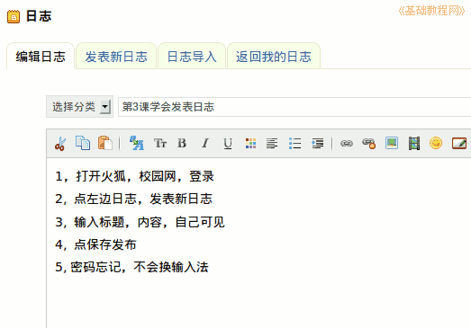

2011-2012 第一学期七年级电脑操作教学设计
作者：TeliuTe 来源：基础教程网
三、学会发表日志 返回目录 下一课
（一）教学设计
1、学习目标：学会发表日志
2、注意事项：碰到的问题这一条改成别的
3、教学过程：
1）教师准备学案和板书；
2）学生整队进入，开机抄黑板上笔记；
3）教师讲解板书演示操作；
4）学生打指法、日志、完成操作；
5）教师打勾记录学生指法成绩，检查日志和操作；
注：学生抄完笔记就开始打指法、日志，老师讲完后再继续完成；
（二）板书设计(学生笔记)
第3课 学会发表日志
1、打开火狐，校网，登录
2、点左边日志，发表新日志
3、输入标题，内容，自己可见
4、点 保存发布
5、...(此处写自己碰到的问题)
操作图示：

（三）课后记
--
分两个任务，一个写日志，另一个打指法
出现的问题是新标签容易出错
--
下节课得把新标签再好好讲一下
有些密码忘记，汉字出不来
--
内容较少，快的一会做完
然后去玩游戏了，慢得还在补上节课
--
整体上还可以，基本都能做出一两项来
有些转来的学生，还得补前面的内容
--
密码让抄本子上，要不下节又忘记了
有个吃东西的，让站了一节课，
--
刚开始提醒了一下，结果第二次还吃
这个就这样定下来吧，养成好习惯
--
开机有个等待的时间，搜索网络启动那个
刚好让抄笔记了，先不讲跳过去的方法
--
把基础打好，把习惯培养好
等操作熟悉后，开始讲信息的内容
返回目录 下一课
本教程由86团学校TeliuTe制作|著作权所有
基础教程网：http://teliute.org/
美丽的校园……
转载和引用本站内容，请保留版权信息和本站链接。